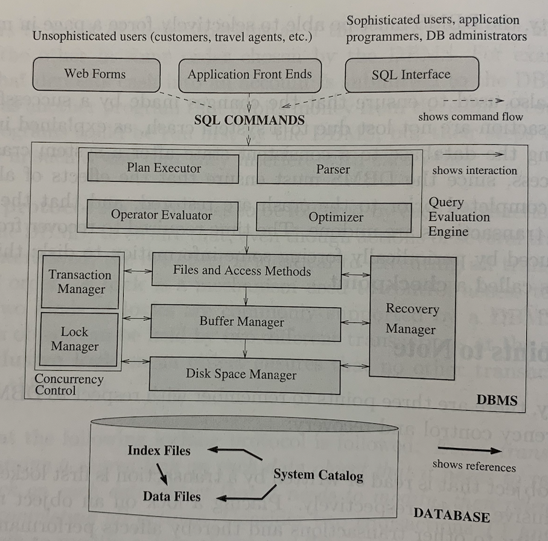

Relational Database Management System
Relational DBMS over File System
- + Size on TB level
- + Provide transaction, support concurrent accessing and modification on multiple records.
- + Provide efficient query (index) and query language.
- + impose constraint on records.
- + System crash recovery
- - must be structured data (FS supports arbitrary and unstructured data)
Concepts
- Relation: a set of records (a table)
- Schema: a description of the relation (table’s metadata)
- Record: a data item (a row)
- Schema defines a set of field/attribute/column, and their types
- Integrity constraints: conditions that the records in a relation must satisfy. e.g. unique id.
Level of abstraction
- External schema (view): what will be presented to individual users and groups. Only the definition of a view is stored, and the view is computed from its definition when requesting. [A layer of indirection]
- Conceptual Schema (logical schema): the relation’s schema
- Physical Schema: define how the database is stored in the Local FS and what are the required indexes (auxiliary data structure)
Incomplete Transactions and System Crashes
DBMS maintains a write-ahead log (change first goes to log then reflect on database) of all writes.
How does a query work
- Accept a SQL query.
- Generate query evaluation plans by the query optimizer.
- Executes these plans.
- Return answers.
Database Design Procedure
- Requirement Analysis: understand requirement, frequency of different operations
- Generate ER model and constraints
- Select a DBMS (PostgreSQL, MySQL) convert ER schema into a relational database schema
- Identify problem from the schema, refine it (e.g. normalizing fields)
- Physical database design: creating indexes according to workload.
- Security consideration
Components
